Receba mais 50 modelos de brincos exclusivos com as respectivas 50 videoaulas de cada um deles, e seja guiada do primeiro nó ao arremate
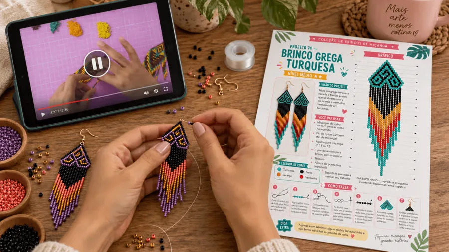
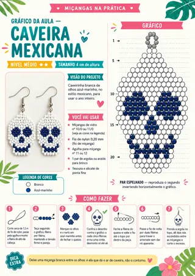
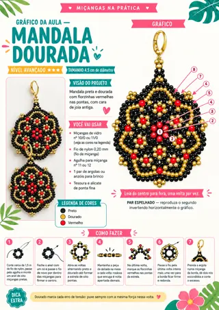
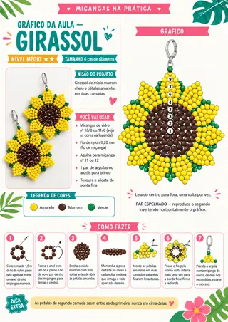
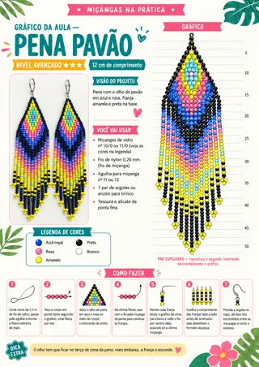
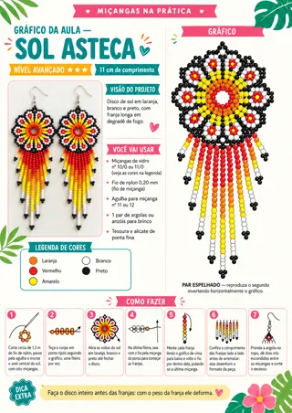
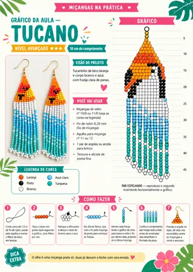
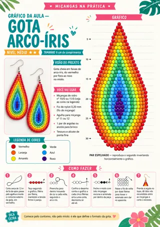
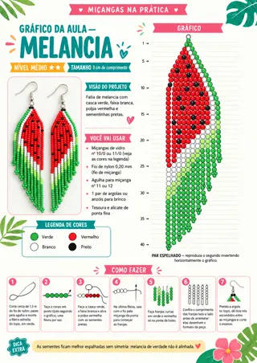
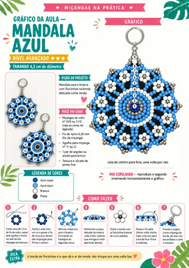
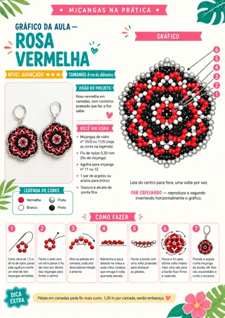
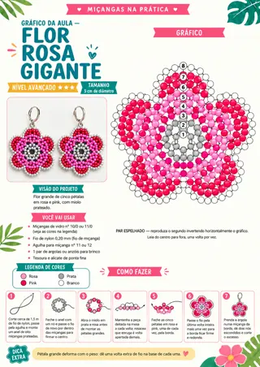
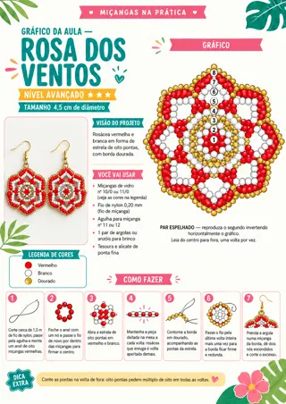
50 modelos de brincos exclusivos — cada um com o seu gráfico, pronto para imprimir, e fora da sua coleção atual.
Montagem do zero, do primeiro nó ao brinco pronto — você vê exatamente onde a agulha entra em cada passo.
Passagem do fio sem embolar e sem quebrar miçanga — o detalhe que o gráfico sozinho não mostra.
Franjas e acabamento com cara de profissional — o que separa o brinco caseiro do brinco que vende.
Mais de 17 horas de gravação, sem corte — dá para pausar, voltar e refazer no seu ritmo.
Teste tudo por 7 dias. Se não for pra você, devolvemos 100% do seu dinheiro, sem perguntas.
Esta oferta aparece uma única vez, agora.
Miçangas da Juh · todos os direitos reservados